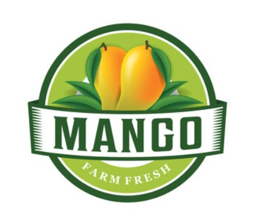

Anuradhapura Mango Export Cooperative Society
Vision
To be the leading force in sustainable mango cultivation and export, renowned for exceptional quality and innovation, while empowering our farmers and enriching global markets with the finest mangoes.
අපගේ ගොවීන් සවිබල ගන්වමින් සහ විශිෂ්ටතම අඹ වලින් ගෝලීය වෙළඳපොළ පොහොසත් කරමින් සුවිශේෂී ගුණාත්මක භාවයෙන් සහ නවෝත්පාදනය සඳහා කීර්තිමත් තිරසාර අඹ වගාවේ සහ අපනයනයේ ප්රමුඛ බලවේගය වීම.
Mission
Our mission is to enhance the livelihoods of our member farmers by fostering advanced cultivation practices and ensuring the highest standards of quality in mango production. We are committed to promoting sustainable agriculture, expanding our reach in the global market, and delivering premium mangoes that meet and exceed international standards. Through collaboration, education, and dedication, we strive to create lasting value for our farmers and delight our customers worldwide.
අපගේ මෙහෙවර වන්නේ උසස් වගා පිළිවෙත් පෝෂණය කිරීම සහ අඹ නිෂ්පාදනයේ ඉහළම ගුණාත්මක බව සහතික කිරීම තුළින් අපගේ සාමාජික ගොවීන්ගේ ජීවනෝපාය වැඩිදියුණු කිරීමයි. තිරසාර කෘෂිකර්මාන්තය ප්රවර්ධනය කිරීමට, ගෝලීය වෙළෙඳපොළ තුළ අපගේ ප්රවේශය පුළුල් කිරීමට සහ ජාත්යන්තර ප්රමිතීන්ට අනුකූලව සහ ඉක්මවන වාරික අඹ ලබා දීමට අපි කැපවී සිටිමු. සහයෝගීතාවය, අධ්යාපනය සහ කැපවීම තුළින්, අපගේ ගොවීන් සඳහා කල්පවත්නා වටිනාකමක් ඇති කිරීමට සහ ලොව පුරා සිටින අපගේ ගනුදෙනුකරුවන් සතුටු කිරීමට අපි උත්සාහ කරමු.